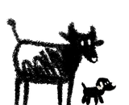

Two files, no dependencies, no build step ·
ds.css + ds.js · everything namespaced ds-
Copy ds.css and ds.js next to your HTML. The
ds class on <body> scopes the reset; ds-body
applies the page background and type. Nothing else is required — the theme follows the
reader's system setting until someone presses a toggle.
Every colour is a custom property, so a theme swap is a variable swap.
Series colours are ordered — take --ds-s1 first and work down; they are
sequenced for contrast against each other. Status colours carry meaning and should
never be used decoratively: if something is --ds-critical red, a reader is
entitled to conclude it is bad.
State lives in ARIA, not in a class: aria-pressed for chips,
aria-selected for tabs, aria-current="page" for nav. That keeps the
styling and the accessibility tree from disagreeing, which they always eventually do when
state is tracked twice.
Nav
Chips — a toggle
Tabs
Buttons and search
A tile is one number you want read at a glance; a card is one
question with its evidence. Cards have a fixed child order —
.ds-chead → [.ds-views] → .ds-csub → .ds-plot → .ds-legend → .ds-tv — because
DS.notes() finds the description by position. The description
starts closed so the page leads with the chart rather than a paragraph.
Inline SVG, no library. Geometry is in viewBox units and the SVG is scaled by
CSS, so pointer coordinates are divided by rendered / DS.W before hit-testing.
Decorative marks are pointer-events:none and one overlay owns hovering,
which is what makes a thin line or a 4px dot easy to hover.
Tables get sticky headers, tabular numerals and blanks that sink to the bottom when sorted — a missing value is unknown, not smallest. Badges state a verdict; callouts state something the reader must know before quoting a number.
ok borderline over target not measured
The mark is two files, the same drawing on a filled panel, inverted.
Both are in the markup; the stylesheet hides one. They are named for where they are
shown, not for what they contain — brand-onlight.png is the
black panel, because a black panel is what contrasts with a light page.
The swap is CSS, never JavaScript. A script runs after first paint, so the reader would see a flash of the wrong icon on every load. Toggle the theme above and watch the mark invert — no script is involved.
The footer sets a rights or provenance notice beside the mark. It is serif and small on purpose: it should read as a footnote rather than as part of the analysis, while still being justified and leaded well enough to actually be read. On a phone it stacks and stops being justified — justified 10.5px text in a narrow column produces rivers of white space.
For academic discussion and presentation only — not for sale or redistribution
Replace this with your own notice. The data presented here were collected by the staff of the institution named, in the course of their routine work, and are shared for teaching, discussion and conference presentation. Any figure quoted elsewhere should carry its n and its date.
For a single-file page, swap the
src for the base64 strings in assets/brand.base64.json — the same
images at 18 KB each — plus the favicon. That is how the dashboards stay one portable
.html with no external requests.
These are the conventions the components assume. They are what make a page built from this readable by someone who did not build it.
.ds-n line for exactly
this. A rate with no denominator is not a finding.3 of 15, not 20%.DS.stack takes
pctOf because a bar carried by one series otherwise reports 100% of itself.:root.@media (prefers-reduced-motion: no-preference).